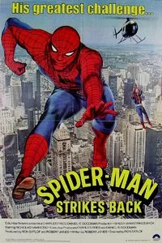
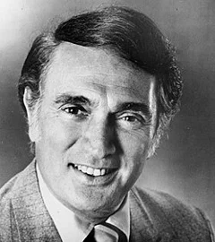

Spider-Man Strikes Back (1978)
| Movie | Release Date | Poster |
|---|---|---|
| Spider-Man Strikes Back 1h 30m · science fiction |  |
| Trailer |
|---|
| No official trailer is available for this film. |
| Rotten Tomatoes | Metacritic | IMDb |
|---|---|---|
| Not available | Not available | View on IMDb |
| Overview |
|---|
Spider-Man Strikes Back is a 1978 American superhero film that had a theatrical release abroad, a composite of the two-parter episode "Deadly Dust" of the contemporary television show The Amazing Spider-Man, released on 8 May 1978. It was directed by Ron Satlof, written by Robert Janes, and stars Nicholas Hammond as the titular character, Robert Alda, Robert F. Simon, Joanna Cameron, and Michael Pataki. The film was preceded by Spider-Man and followed by Spider-Man: The Dragon's Challenge. Full plot (spoilers)The film begins with the FDNY, NYPD, and ambulances rushing to a building. A woman who has recently been in a failed relationship is about to end her life, but Spider-Man saves her at the last minute, to the applause of the crowd below. At the New York State University, Dr. Baylor, one of Peter Parker's tutors, announces that they are going to experiment using plutonium. A group of students, including Peter, is appalled as they think it's too dangerous. Later on, Peter meets an attractive journalist named Gale Hoffman, who is determined to get an interview with Spider-Man following his heroism in the distraught woman's rescue. Later, three students steal some plutonium from the lab. They want to use the plutonium to build an atomic bomb to illustrate the dangers of nuclear power. Spider-Man appears on the scene in an unsuccessful attempt to stop them, but is seen by security guards. When one of the activists faints, the other two realize she has radiation poisoning and terminate their plans to rush her to the hospital. As a result, the police blame Spider-Man for the theft, while Inspector Decarlo accuses Peter Parker. Meanwhile, in Switzerland, villain Mr. White reads a newspaper report of the theft and deduces that it was the students rather than Spider-Man who stole the radioactive material. He plans to steal the plutonium so that he can obtain his own version of the weapon. He departs immediately for the United States with his monstrous henchman, Angel. White tries to kidnap Peter in an effort to locate the plutonium, but he manages to escape. Peter then gets arrested by the NYPD, but escapes detention as Spider-Man. White's henchmen engage in a fight against Spider-Man and hurl him off a twelve-story building, seemingly to his death. He saves himself by forming a net with his webbing, but in the confusion, White escapes with the bomb. Spider-Man is forced to defeat this scheming villain to stop him from blowing up Wall Street . J. Jonah Jameson, the owner of The Daily Bugle , discovers that White has fled to Los Angeles and arranges for Peter Parker and Gale Hoffman to travel to the west coast in search of him. Mr. White demands $1,000,000,000 in return for not setting off the plutonium bomb in a heavily populated area. The authorities assume that he means New York City. In fact, White plans to set off the bomb in Los Angeles at the time the President is giving a speech there. Spider-Man finally tracks White to his lair and learns of his plans. He locates the bomb and defuses it at the last second. However, White escapes and vows that he and Spider-Man will meet again. |
| Actor | Character | Photo |
|---|---|---|
| Nicholas Hammond | Peter Parker / Spider-Man |  |
| Chip Fields | Rita Conway | No photo |
| Robert F. Simon | J. Jonah Jameson |  |
| Robert Alda | Mr. White |  |
| Michael Pataki | Capt. Barbera |  |
| Joanna Cameron | Gale Hoffman | |
| Randy Powell | Craig | No photo |
| Anne Bloom | Carla Wilson | No photo |
| Leigh Kavanaugh | Linda | No photo |
| Lawrence P. Casey | Angel | No photo |
| Sidney Clute | Inspector DeCarlo | No photo |
| Emil Farkas | Karate Thug | No photo |
| Simon Scott | Dr. Baylor | No photo |
| Ron Hajak | Motorcycle Salesman | No photo |
| Randolph Powell | – | No photo |
| Detail | Value |
|---|---|
| Directed by | Ron Satlof |
| Written by | Not available |
| Produced by | Not available |
| Music by | Stu Phillips |
| Cinematography | Not available |
| Edited by | Not available |
| Production companies | Not available |
| Distributed by | Columbia Pictures |
| Running time | 90 minutes |
| MPAA rating | Not rated |
| Budget | Not available |
| Box office | Not available |
Overview, plot, and cast descriptions are from Wikipedia (CC BY-SA 4.0). Credits, ratings, and box office are from Wikidata.